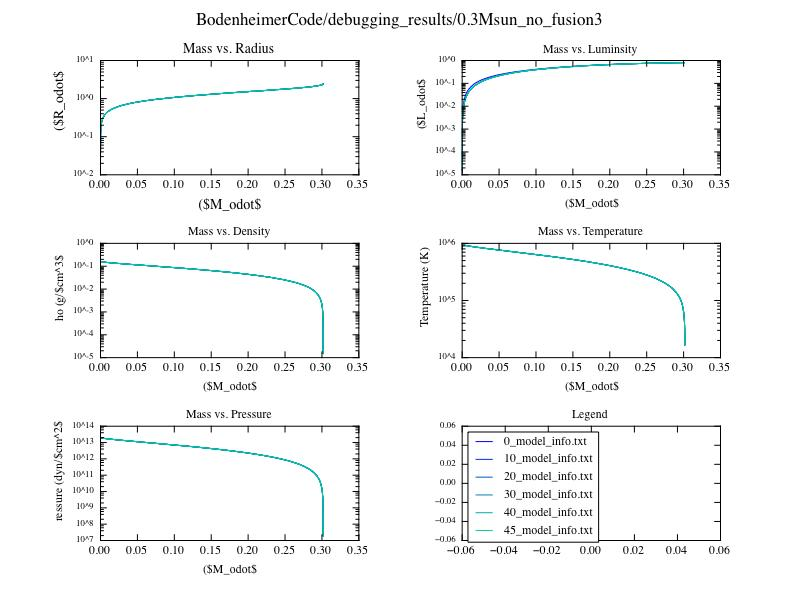

Date
& Time:
Location: From home
Computing context: Macho Mac 2
This figure shows how the 0.3Msun model without fusion can reach convergence, if it is not started from an n=3/2 polytropic profile. Rather, this simulation's starting profile was a converged model obtained from a single timestep evolution of a model with full fusion on. Once the fusion-on model converges, I took that profile and fed it in as the starting point for the fusion-off model (powered solely by PdV from the star's contraction).
This procedure's success left me with two questions last time, which I want to answer today:
Why do these lower mass models require this extra 'help' to converge under PdV-only conditions, and
Can I just scale that input model down to Jupiter-like sizes/temperatures/parameters and get a PdV-only Jupiter to converge right off the bat, or will I need to do some mass-chaindown rigamarole?
Answer the two questions above
Let the 0.3Msun no-fusion model (started from the converged, fusion-on model) evolve forward in time, and check that it navigates the HR diagram in the correct/physical way
i.e., that it follows a Hayashi track in the same way that the more massive models do when we just let them contract under gravity.
Note: it was the 0.3Msun_no_fusion3 run that produced the converged result, so you want to use the model/setup from there for this time-forward evolution.
The results file for that run has been slightly re-located, for logical organizational purposes. It's now living in: /Users/laurel/Desktop/Research/BodenheimerCode/debugging_results/0.3Msun_No_Fusion_debug/0.3Msun_no_fusion3
And remember to use 'parse_evolved_models.pl' to organize the results.
May need to update one of my 2 python plotting scripts in order to get plots out of these things.
Will definitely need to convert my HRplot.pro IDL script into python, b/c we want to follow these models' journeys through the HR diagram.